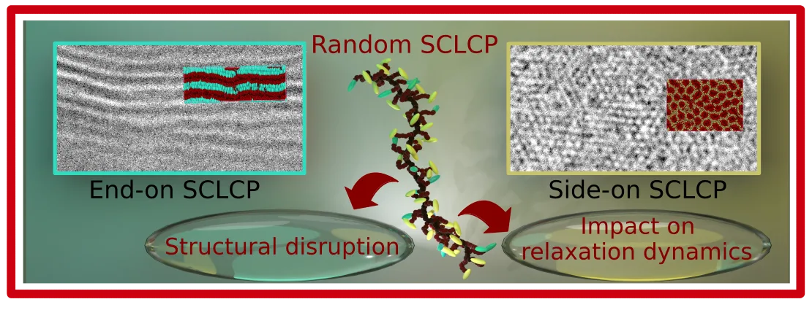
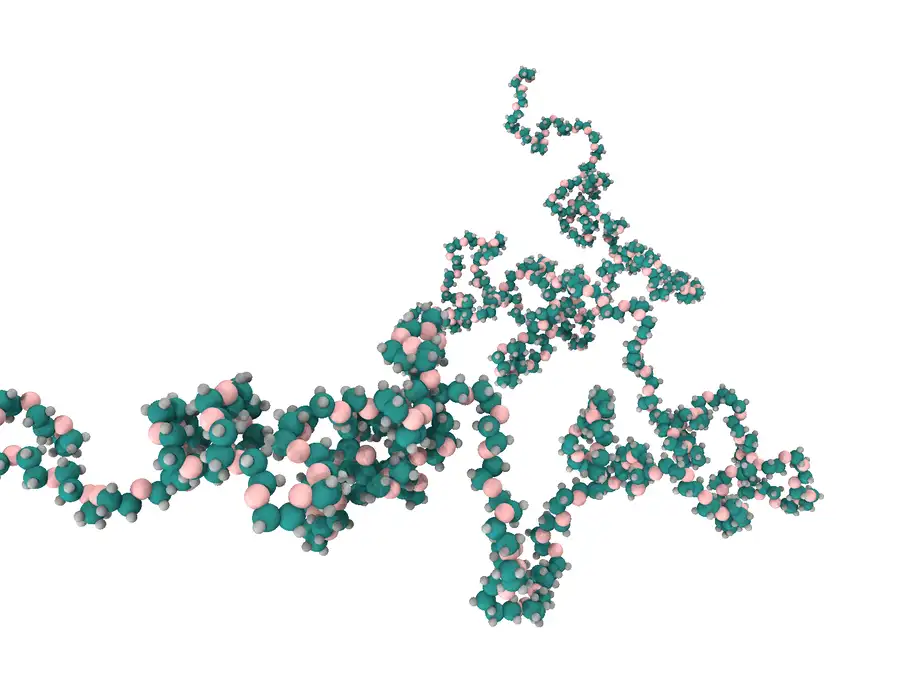
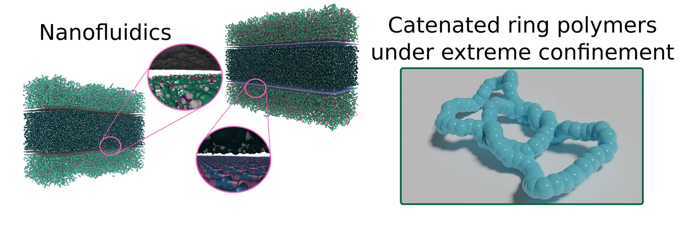

Research Vision
My research combines theory and simulation to study soft matter and complex fluids across multiple scales. By linking molecular-level interactions with macroscopic observables, I explore how structure and dynamics emerge in systems such as polymer melts, liquid crystal networks, and nanoconfined fluids. Using atomistic and coarse-grained models, my work aims to bridge microscopic mechanisms and bulk behavior, advancing both fundamental understanding and predictive capabilities in engineering applications.
Research Areas

Soft matter refers to materials whose behavior is strongly influenced by thermal fluctuations, where the thermal energy (kBT) is comparable to the strength of the molecular interactions. This includes a wide range of substances such as colloids, polymers, foams, gels, granular materials, liquid crystals, surfactants, and a number of biomaterials. Research in this field focuses on understanding how molecular architecture, thermodynamic conditions, and external forces govern the structural and dynamic properties of these materials. For example, in liquid crystal polymers, the interplay between the polymer's architecture and liquid crystal moieties influences mesophase transitions and thermal behavior. By using computational methods such as coarse-grained molecular dynamics, we explore how these materials respond to thermal fluctuations, contributing to the design of advanced materials with tunable properties.

Rheology is the study of how materials deform and flow under external forces, linking stress and deformation over time. In soft matter systems like polymers and complex fluids, it reveals non-Newtonian behaviors. Our research explores polymer rheology through theoretical and computational approaches, focusing on both linear and nonlinear regimes. We bridge multiple levels of description, from atomistic force fields in molecular dynamics (MD) simulations to coarse-grained models like the discrete slip-link model (DSM). This multiscale framework allows us to predict rheological behavior across vastly different time and length scales. By integrating physics-based models with high-fidelity simulations, our work advances predictive capabilities in polymer rheology, offering fundamental understanding and practical applications in materials design and processing.

The high surface-to-volume ratio is why fluids in nanoconfinement, such as nanochannels or nanopores, exhibit exotic behaviors that deviate from continuum theories. At the nanoscale, classic Navier-Stokes equations shift from being predictive to merely descriptive. In this context, molecular dynamics (MD) simulations are key to studying fluid and biomolecular dynamics, providing insights beyond macroscopic models. Our research focuses on nanofluidic systems, particularly the role of 2D material coatings like graphene and hBN in nanochannels, which alter transport properties such as slip lengths and Kapitza resistance. We also explore the behavior of complex biological systems confined in nanoscale environments to understand the dynamics at this scale.
Peer-Reviewed Publications
D. Becerra, G. Schiappacasse-Parra, and J. M. Garrido. Biaxiality and anisotropic thermal transport in side-chain liquid crystal elastomers with tunable mesogen attachment The Journal of Chemical Physics, 164(13), 2026.
DOI: https://doi.org/10.1063/5.0322402M. Katzarova, A. Córdoba, D. Becerra, and J. D. Schieber. Slip-link model predictions for the flow of entangled melts of star-branched and linear chains of similar span length Rheologica Acta, 65:409–418, 2026.
DOI: https://doi.org/10.1007/s00397-026-01560-zM. Katzarova, D. Becerra, A. Córdoba, K. Taletskiy, and J. D. Schieber. Slip-Link Theory Predicts Entangled, Star-Branched Relaxation Measurably Different from Tube Model Predictions. Macromolecules, 59(1):564–574, 2025. Featured in Front Cover
DOI: https://doi.org/10.1021/acs.macromol.5c01583A. Córdoba, D. Becerra, and J. D. Schieber. Stable upstream swimming of a swarm of puller microswimmers. Physics of Fluids, 37(6):061704, 2025.
DOI: https://doi.org/10.1063/5.0275436A. Córdoba, D. Becerra, and J. D. Schieber. Reëntanglement Dynamics in Polymer Melts Can Be Explained by Fast Dangling End Retraction without Resorting to Nonuniversality. ACS Macro Letters, 14(3):385–390, 2025.
DOI: https://doi.org/10.1021/acsmacrolett.4c00809A. Rojano, D. Becerra, J. H. Walther, S. Prakash, and H. A. Zambrano. Effect of charge inversion on the electrokinetic transport of nanoconfined multivalent ionic solutions. Physics of Fluids, 36(10):102025, 2024.
DOI: https://doi.org/10.1063/5.0227719D. Becerra, J. H. Walther, and H. A. Zambrano. Role of Underlying Substrates on the Interfacial Thermal Transport in Supported Graphene Nanochannels: Implications of Thermal Translucency. Nano Letters, 24(39):12054–12061, 2024. Featured in Front Cover
DOI: https://doi.org/10.1021/acs.nanolett.4c02106D. Becerra, A. Klotz, and L. M. Hall. Single-molecule analysis of solvent-responsive mechanically interlocked ring polymers and the effects of nanoconfinement from coarse-grained simulations. The Journal of Chemical Physics, 160(11):114906–114906, 2024.
DOI: https://doi.org/10.1063/5.0191295D. Becerra, P. R. Jois, and L. M. Hall. Conformational variability of intrinsically isotropic polymers with varying stiffness immersed in nematogenic solvents. Polymer, 295:126774, 2024.
DOI: https://doi.org/10.1016/j.polymer.2024.126774D. Becerra, Y. Xu, X. Wang and L. M. Hall. Impact of Molecular-level Structural Disruption on Relaxation Dynamics of Polymers with End-on and Sideon Liquid Crystal Moieties. ACS Nano, 17(24):24790–24801, 2023.
DOI: https://doi.org/10.1021/acsnano.3c05354D. Becerra, A. Córdoba, J. H. Walther and H. A. Zambrano. Water flow in a polymeric nanoslit channel with graphene and hexagonal boron nitride wall coatings: An atomistic study. Physics of Fluids, 35(10):102009, 2023.
DOI: https://doi.org/10.1063/5.0165657D. Becerra, P. R. Jois, L. M. Hall. Coarse-grained modeling of polymers with end-on and side-on liquid crystal moieties: Effect of architecture. The Journal of Chemical Physics, 158(22):224901, 2023.
DOI: https://doi.org/10.1063/5.0152817D. Becerra, A. Córdoba, and J. D. Schieber. Examination of Nonuniversalities in Entangled Polymer Melts during the Start-Up of Steady Shear Flow. Macromolecules, 54(17):8033-8042, 2021. Featured in Front Cover
DOI: https://doi.org/10.1021/acs.macromol.1c00156D. Becerra, A. Córdoba, M. Katzarova, M. Andreev, D. C. Venerus, and J. D. Schieber. Polymer rheology predictions from first principles using the slip-link model. Journal of Rheology, 64(5):1035-1043, 2020.
DOI: https://doi.org/10.1122/8.0000040-
E. Wagemann, D. Becerra, J. H. Walther, and H. A. Zambrano. Water flow enhancement in amorphous silica nanochannels coated with monolayer graphene. MRS Communications, 10(3):428-433, 2020.
DOI: https://doi.org/10.1557/mrc.2020.53
Education
Gallery
Code
Under Construction